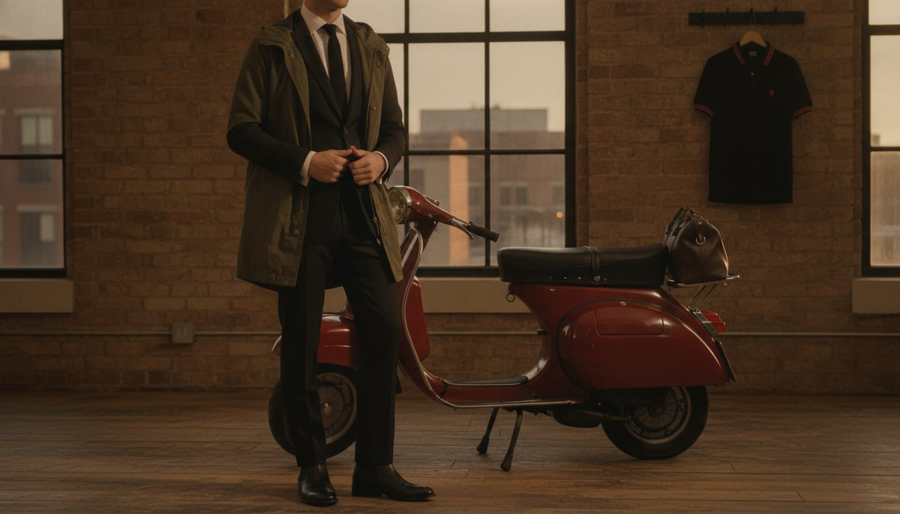

The Mod
Mod culture came out of working-class London in the early 1960s, built by young men who couldn't afford Savile Row but wanted its sharpness anyway, and found it instead in slim, made-to-measure suits from smaller tailors, Italian in spirit if not always in fact. The scooter — a Vespa or Lambretta, chosen because it was cheap, fast, and wouldn't muss a suit the way a motorcycle would — became inseparable from the look, and bands like the Small Faces and later the Jam turned the whole aesthetic into a genuine youth movement rather than just a menswear trend.
The trademark is precision at a young price point: a two- or three-button suit cut close to the body, a button-down shirt underneath (borrowed, in fact, from the Ivy look across the Atlantic), a parka thrown over the top to protect it all on the ride over. Fred Perry polos and target logos gave the movement a uniform even outside the suit.
It suits people who want the sharpness of formal tailoring without any of its stuffiness — who see a slim suit as something you could conceivably run in, if the night called for it. There's a real working-class pride underneath the polish: looking this precise was never handed to anyone in this tradition, it was assembled on a budget and worn like it wasn't.
- A slim two- or three-button suit, cut close through the body
- A fishtail parka worn over the suit, purely for the ride over
- Button-down shirts and knitted ties, borrowed from Ivy style
- Fred Perry polos and the target/roundel as an unofficial crest
- Chelsea boots or bowling shoes, kept sharp and low-profile
The Slim Suit
London's mod tailors in the early 1960s cut suits close to the body specifically because their customers couldn't afford Savile Row's cloth or hours, and a slim, made-to-measure suit from a smaller tailor was the fastest way to look sharp on a limited budget.
Better wool and a more precisely tailored close cut.
Shop this →Cut exactly to the body, in genuine Italian or English mohair-blend cloth.
Shop this →The Fishtail Parka
The M-51 fishtail parka was surplus U.S. military gear before London mods adopted it purely to protect their suits on the ride over by scooter — the parka was never meant to be seen anywhere except on the road.
The silhouette at an accessible price, synthetic-blend shell.
Shop this →English-made or genuinely vintage military surplus in excellent condition.
Shop this →The Fred Perry Polo
Fred Perry, a former tennis champion, launched his laurel-wreath polo in 1952 for the tennis court; mods adopted it a decade later as smart-casual off-duty wear, and the twin-tipped collar became a genuine subcultural signal.
The actual laurel-wreath polo the movement adopted as uniform.
Shop this →English-manufactured, heavier pique, closest to the original 1950s piece.
Shop this →The Chelsea Boot
The elastic-sided Chelsea boot, originally designed for Queen Victoria in the 1830s, got its rock-and-roll and mod revival in 1960s London when the low-profile silhouette worked equally well under a slim suit trouser or jeans.
English-made with better leather and a proper Goodyear or Blake construction.
Shop this →The most refined version of a boot this wardrobe treats as an everyday essential.
Shop this →The Knitted Tie
The square-bottomed knitted tie — a texture and shape entirely different from a smooth silk tie — became a mod staple partly because it paired better with the polo's pique texture than a slippery silk ever could.
The tie most associated with reviving this exact category for a modern audience.
Shop this →Custom colors and a hand-finished square end.
Shop this →A lighter-weight mohair-blend suit, the parka stays folded, and the Fred Perry gets worn alone rather than under the jacket.
The fishtail parka finally does its actual job, a heavier suit underneath, and a scarf in a house-check pattern.
The parka again -- this coat exists specifically for exactly this scenario, protecting a suit not built to get wet.
A heavier coat replaces the parka temporarily, Chelsea boots get a rubber-soled winter equivalent, and the scooter stays in the garage.
The two-button suit becomes a three-piece, the knitted tie becomes silk, and the whole look sharpens toward something a Savile Row client might almost recognize.
London, obviously, plus any city with a genuine scooter club and a decent record shop within walking distance.
Nik Cohn's 'Awopbopaloobop Alopbamboom,' biographies of the Small Faces and the Jam, and mod-scene fanzines, vintage or otherwise.
The Who, the Jam, and Northern Soul deep cuts, sought out specifically for their obscurity.
A small, immaculate flat, a scooter parked as close to the door as physically possible, and a record collection more impressive than the furniture.
Scooter rallies, a genuine and ongoing hunt for the perfect vintage record, and dancing taken more seriously than most people take exercise.